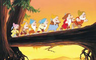

The seven dwarfs are Happy, Grumpy, Dopey (the beardless one), Doc, Bashful, Sneezy and Sleepy. They were all miners.
The Beatles’ first song to hit the UK charts was “Love me Do” on 11th October 1962.
A “walla-walla scene” is one where extras pretend to be talking in the background of a film. When they say “walla walla”, it looks as if they are actually talking.
Are you superstitious? Do you try to avoid the number 13? Generally, 12 is considered a nice complete number. So, anything more is thought of as unnatural. There are 12 signs of the zodiac, 12 tribes of Israel, 12 months in the Roman calendar and the 12 apostles of Jesus. Because of its negative connotations, the Italian lottery doesn’t have a number 13, and many airports don’t have a thirteenth gate.
The unlucky date of Friday 13th has its origins in several traditions. In a Viking myth, there were once 12 gods at a dinner. The thirteenth, Loki, a god of mischief, arrived. He organised for the blind god of darkness, Hoder, to unwittingly kill his brother Balder, the god of light. In Christian tradition, there were thirteen guests at The Last Supper, the last guest being Judas Iscariot.
Do horseshoes have a special significance in your country? The superstition of keeping horseshoes has different variations. In many countries, hanging a horseshoe above a door in a downward position will bring good fortune to that house or building in general. On the other hand, in Ireland and Britain people turn the piece of metal upwards, so that the good luck stays in and doesn’t fall out. There is also the belief that if you hang a horseshoe in your bedroom, you won’t have nightmares. ✪